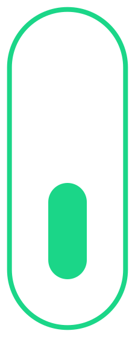

Paper
Di Indonesia sendiri rata-rata setiap individu mengkonsumsi 27kg kertas per tahun.
contoh web yang saya buat bertujuan untuk menjadi media informasi untuk pemahaman dan penerapan tindakan 3R untuk limbah yang ingin diketahui pengguna.
About Usscroll
Di sini kami menyediakan artikel dan video tentang kertas, plastik, dan sampah organik. Jika Anda ingin melihat artikel-artikel ini, silakan pilih salah satu dari 3 di bawah ini
Di Indonesia sendiri rata-rata setiap individu mengkonsumsi 27kg kertas per tahun.
Setiap 20 menit, setara dengan 10 ton truk muatan plastik dibuang ke perairan di sekitar Indonesia.
Indonesia diperkirakan menghasilkan > 190.000 ton sampah per hari, yang sebagian besar organik.
Di sini, kami menawarkan berbagai jenis produk yang membantu Anda mengurangi limbah plastik
Di sini, kami memberi Anda banyak informasi, artikel, dan bahkan video tentang pengelolaan limbah